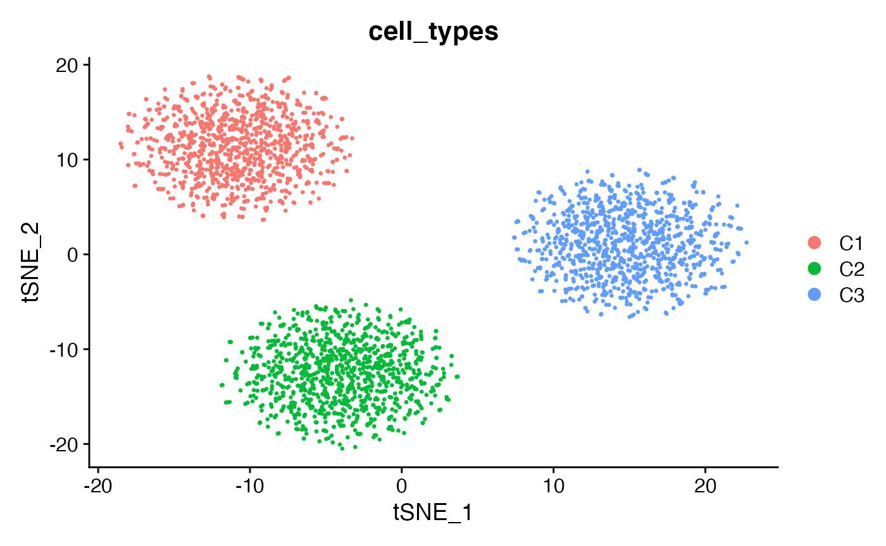
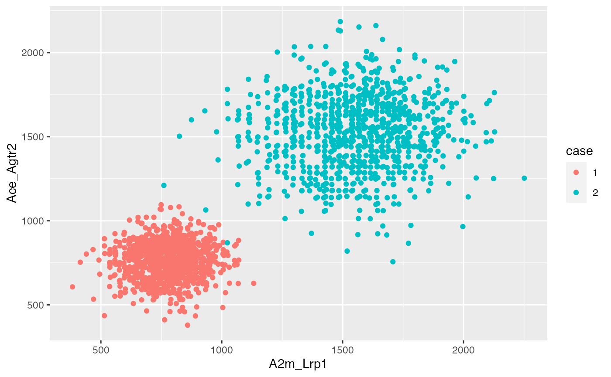

simulation_example3.Rmd
# Specify number of cells, marker genes, noisy genes
n_cell_per_type <- 1000
n_marker_genes <- 50
n_noise_genes <- 5000
set.seed(34)
# Marker genes to distinguish c1,c2,c3
marker_c1_mean <- 10
marker_c2_mean <- 20
marker_c3_mean <- 30
markers <- cbind(matrix(rnbinom(n = n_cell_per_type*n_marker_genes,mu=marker_c1_mean,size=20),nrow = n_marker_genes,ncol = n_cell_per_type),
matrix(rnbinom(n = n_cell_per_type*n_marker_genes,mu=marker_c2_mean,size=20),nrow = n_marker_genes,ncol = n_cell_per_type),
matrix(rnbinom(n = n_cell_per_type*n_marker_genes,mu=marker_c3_mean,size=20),nrow = n_marker_genes,ncol = n_cell_per_type))
# Noise genes
noise_mean <- 15
noise <- matrix(rnbinom(n = n_cell_per_type*3*n_noise_genes,mu=noise_mean,size=20),nrow = n_noise_genes,ncol = n_cell_per_type*3)
# Combining them
count_matrix2 <- rbind(l1,r1,l2,r2,markers,noise)
nrow(count_matrix2)
#> [1] 5054
ncol(count_matrix2)
#> [1] 3000
rownames(count_matrix2) <- c("A2m","Lrp1","Ace","Agtr2",paste0("G",1:n_marker_genes),paste0("N",1:n_noise_genes))
colnames(count_matrix2) <- paste0("Cell",1:(n_cell_per_type*3))
# Preprocessing
# Construct the seurat input
cell_type_annotations <- as.data.frame(c(rep("C1",n_cell_per_type),rep("C2",n_cell_per_type),rep("C3",n_cell_per_type)))
rownames(cell_type_annotations) <- colnames(count_matrix2)
colnames(cell_type_annotations) <- c("cell_types")
seu_obj_sim2 <- Seurat::CreateSeuratObject(counts = count_matrix2,meta.data=cell_type_annotations)
Seurat::Idents(seu_obj_sim2) <- "cell_types"
seu_obj_sim2 <- Seurat::NormalizeData(seu_obj_sim2)
seu_obj_sim2 <- Seurat::FindVariableFeatures(seu_obj_sim2,selection.method="disp")
seu_obj_sim2 <- Seurat::ScaleData(seu_obj_sim2)
#> Centering and scaling data matrix
seu_obj_sim2 <- Seurat::RunPCA(seu_obj_sim2,npcs = 30)
#> PC_ 1
#> Positive: A2m, Ace, N3382, N280, N2645, N3204, N3874, N1144, N3073, N1576
#> N3832, N968, N3987, N192, N2871, N3747, N2847, N3012, N4080, N3760
#> N2211, N1305, N767, N474, N3888, N4304, N3550, N2623, N1733, N2289
#> Negative: G9, G31, G17, G45, G21, G24, G26, G50, G14, G3
#> G40, G4, G7, G48, G37, G13, G28, G11, G34, G44
#> G39, G18, G12, G16, G36, G5, G19, G1, G33, G41
#> PC_ 2
#> Positive: Lrp1, Agtr2, N2399, N4625, N4474, N2947, N3876, N2145, N4617, N1862
#> N2955, N4938, N3633, N1595, N971, N3887, N2754, N1659, N1979, N3648
#> N1878, N1140, N4238, N4467, N3414, N1532, N1196, N467, N2046, N296
#> Negative: A2m, Ace, N2757, N4738, N1267, N4517, N279, N372, N1377, N1502
#> N2976, N2965, N1877, N2175, N2454, N2267, N4048, N3104, N4335, N145
#> N160, N3772, N2908, N465, N3100, N2137, N84, N1556, N4542, N3959
#> PC_ 3
#> Positive: N3555, N1967, N3448, N1878, N3005, N385, N3056, N2280, N2935, N4304
#> N3934, N1342, N3664, N4770, N2150, N862, N3822, N118, N3064, N592
#> N4076, N224, N4782, N3108, N3246, N1749, N1937, N4578, N4074, N3729
#> Negative: N4738, N2203, N3143, N2161, N867, N4988, N771, N2475, N2881, N2509
#> N3380, N4745, N4510, N14, N1325, N3053, N2542, N4012, N3547, N257
#> N2409, N744, N4776, N2494, N817, N1219, N4596, N2779, N3638, N2717
#> PC_ 4
#> Positive: N1144, N70, N3488, N2236, N2029, N1679, N4649, N4785, N3043, N1074
#> N2538, N3032, N2574, N2351, N1771, N4449, N1904, N123, N816, N971
#> N4625, N3734, N3464, N3720, N1982, N2839, N450, N1903, N666, N1441
#> Negative: N4585, N2241, N728, N4153, N1313, N2935, N1298, N3393, N3204, N319
#> N2234, N4409, N1018, N959, N328, N4534, N4762, N4207, N1502, N3256
#> N2600, N2801, N11, N2054, N4618, N2174, N284, N2815, N1785, N309
#> PC_ 5
#> Positive: N1155, N2147, N160, N3061, N957, N3162, N2259, N572, N2837, N4529
#> N3120, N2085, N2634, N514, N909, N2027, N2765, N2542, N565, N3726
#> N1337, N3286, N1425, N889, N3447, N2666, N2146, N716, N2437, N14
#> Negative: N1844, N415, N1795, N1327, N4097, N2061, N3591, N1515, N3456, N841
#> N164, N4367, N1807, N1078, N2145, N1044, N3451, N360, N3222, N2833
#> N2995, N4235, N1661, N1489, N4753, N4637, N2253, N2200, N3160, N4092
seu_obj_sim2 <- Seurat::RunTSNE(seu_obj_sim2,dims= 1:30,seed.use = 34)
Seurat::DimPlot(seu_obj_sim2,reduction = "tsne",group.by = "cell_types")
####################################
## Case 1: only c1 and c2 for NICHES ##
####################################
# Run NICHES
sim1 <- NICHES::RunNICHES(object = subset(seu_obj_sim2,idents = c("C1","C2")),LR.database = "fantom5",species = "mouse",assay = "RNA",meta.data.to.map = c('cell_types','orig.ident'),
CellToCell = F,CellToSystem = F,SystemToCell = T,
CellToCellSpatial =F,CellToNeighborhood = F,NeighborhoodToCell =F,blend = 'sum')
#>
#> 2000 distinct cells from 2 celltypes to be analyzed
#>
#> Limiting ground truth to genes within dataset
#>
#> Mapping against 2 ground truth signaling mechanisms
#>
#> 2000 System-To-Cell edges were computed, across 2 cell types
# only take the receiving type == c2
#Seurat::Idents(sim1[['SystemToCell']])
sim1_sub <- subset(sim1[['SystemToCell']],idents = "C2")
data_mat_df <- as.data.frame(t(as.matrix(sim1_sub@assays$SystemToCell@data)))
data_mat_df$ReceivingType <- sim1_sub@meta.data$ReceivingType
colnames(data_mat_df) <- c("A2m_Lrp1","Ace_Agtr2","ReceivingType")
#######################################
## Case 2: c1, c2, c3 all for NICHES ##
#######################################
# Run NICHES
sim2 <- NICHES::RunNICHES(object = seu_obj_sim2,LR.database = "fantom5",species = "mouse",assay = "RNA",
meta.data.to.map = c('cell_types','orig.ident'),
CellToCell = F,CellToSystem = F,SystemToCell = T,
CellToCellSpatial =F,CellToNeighborhood = F,NeighborhoodToCell =F,blend = 'sum')
#>
#> 3000 distinct cells from 3 celltypes to be analyzed
#>
#> Limiting ground truth to genes within dataset
#>
#> Mapping against 2 ground truth signaling mechanisms
#>
#> 3000 System-To-Cell edges were computed, across 3 cell types
# only take the receiving type == c2
sim2_sub <- subset(sim2[['SystemToCell']],idents = "C2")
data_mat_df2<- as.data.frame(t(as.matrix(sim2_sub@assays$SystemToCell@data)))
data_mat_df2$ReceivingType <- sim2_sub@meta.data$ReceivingType
colnames(data_mat_df2) <- c("A2m_Lrp1","Ace_Agtr2","ReceivingType")
# stack both
data_mat_df$case <- "1"
data_mat_df2$case <- "2"
data_mat_df_combo <- rbind(data_mat_df,data_mat_df2)
ggplot(data_mat_df_combo, aes(x=A2m_Lrp1, y=Ace_Agtr2, color=case)) +
geom_point()